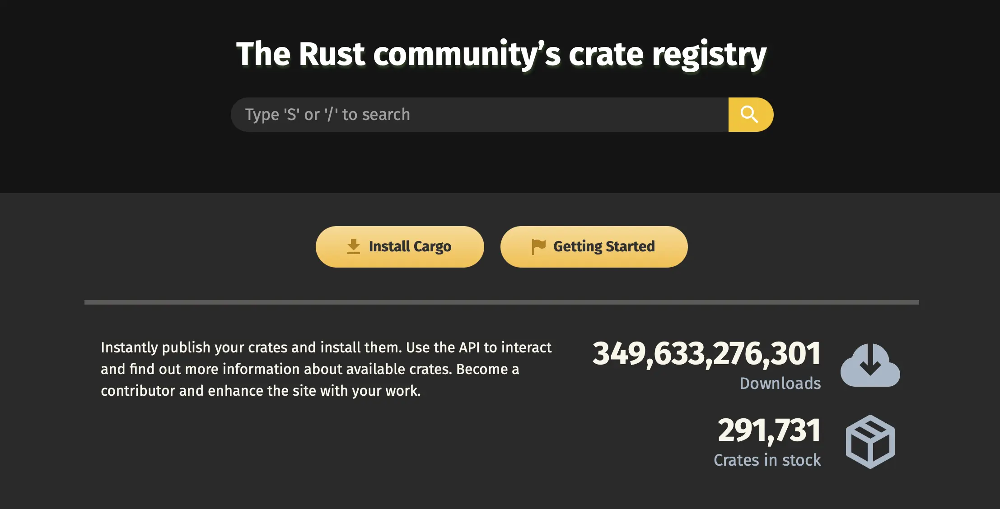
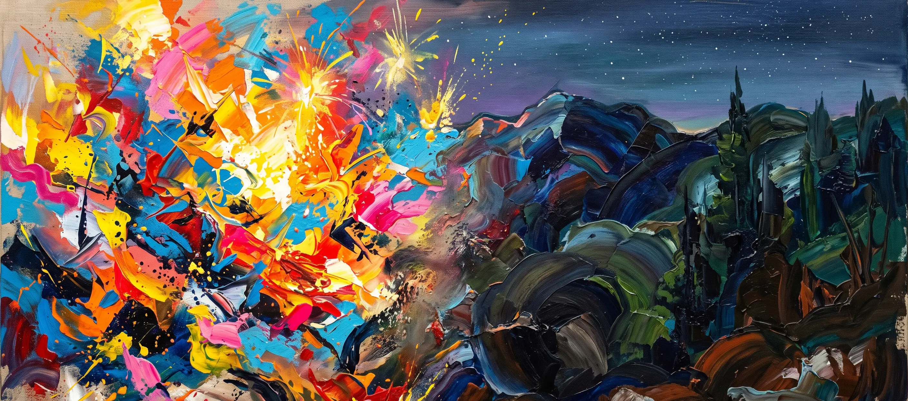

Rust and Crystal: My Two Main Languages
Balancing Popularity and Quiet Power
Before I start the article, let me share one of my interesting habits. I often use two different things together for the same purpose.
macOS and Linux, Helix and Zed, Claude and Grok, and my left and right hands come to mind right away. (By the way, I am ambidextrous.)
Programming languages are similar. I started with C/C++, tried various languages, and now I mainly use Rust and Crystal. I personally find this combination really attractive. Today, I want to talk lightly about why I think the combination of these two languages is so appealing and what I am building with it.
Rust and Crystal
Both languages share the characteristics of being compiled and typed. And they are both very fast. However, their popularity follows quite different paths. Rust started with a strong fan base and has now become a very mainstream language. Crystal, on the other hand, is not that popular even within the community. People sometimes call it a quiet village, but it has passionate users.
There are several reasons why I chose these languages as my main ones, but the core reasons are simple: Rust's stability and popularity, and Crystal's syntax along with my personal attachment to it.
Productivity and Ecosystem
The popularity of a language means its vitality and the strength of its ecosystem. This provides good productivity and helps programs be maintained for a long time. Rust is already excellent in terms of language design for stability and speed, but its solid ecosystem and popularity make it even stronger.

In that sense, popular languages are developed with the collective power of many people without us even realizing it. From my perspective, Rust perfectly fills this position. For stable collaboration, I have no choice but to choose a popular language.
Love and Learning
You might wonder why I use Crystal, which is not popular, as one of my main languages. There are practical reasons like its familiar syntax from Ruby (which I used a lot before), fast performance, and lightweight binaries. But fundamentally, personal attachment plays a big role. I simply like the language itself.
# Crystal is so simple and beautiful :)
channel = Channel(Int32).new
3.times do |i|
spawn do
channel.send 10 * (i + 1)
end
end
puts channel.receive
In the end, it is people who read, write, and use languages. To keep working on long-term projects, attachment to the language is important. Of course, this applies not only to languages but to other things as well. That is the reason and secret to continuing work you enjoy. In that regard, Crystal is a language I have a lot of personal attachment to, and one that I enjoy using. I think it is a language I can keep using steadily even as time passes.
There is also another big reason. A weaker ecosystem actually plays an important role in learning technology. Because there are no libraries for niche features, I can build them myself and understand the principles in the process. I personally learned a lot from that experience.
Balancing Popularity and Quiet Power
So, what I want to say through this post is that when choosing programming languages, you do not necessarily have to learn and use only popular ones.
Sometimes it is also valuable to use a growing language that is not yet mainstream, join its community, and learn along the way. If you have the time, I recommend trying both a popular main language and a growing one together. You can gain more than you might expect :)
